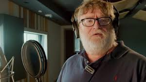
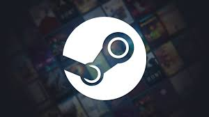
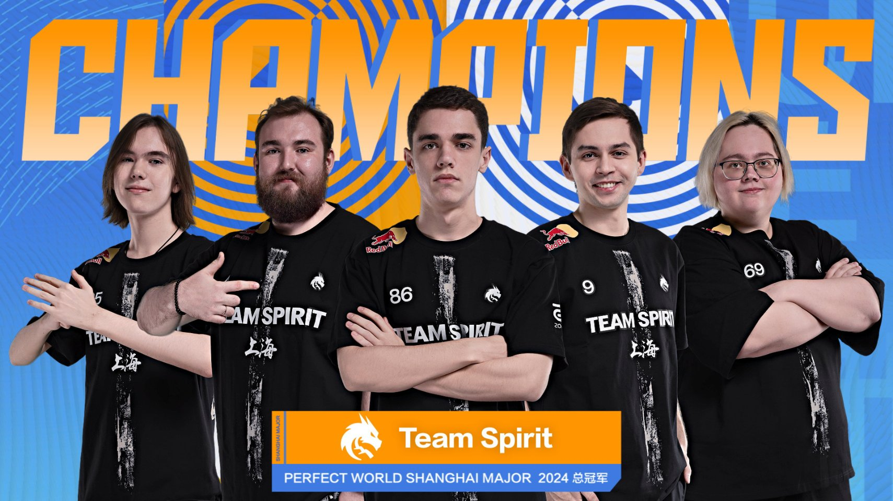
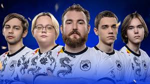
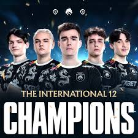
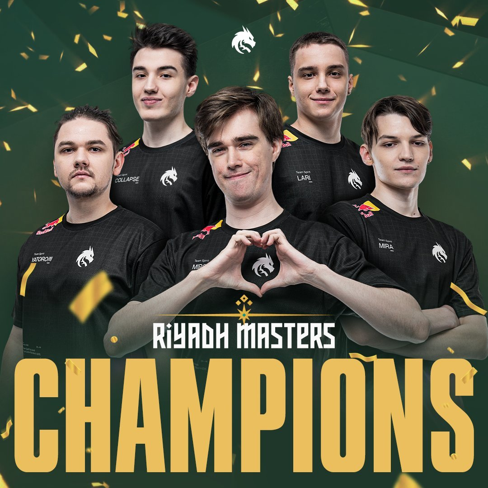

Gabe Logan Newell - Сын шлюхи
| Data urodzenia: | 3 listopada 1962 |
| Majątek: | Ok. 4 miliardy USD |
| Ulubiona gra: | Dota 2 |
| Ciekawostka: | Kolekcjoner noży |
Początki Legendy: Od Microsoftu do Wolności
Historia Gabe'a Newella to podróż od stabilnej korporacji do absolutnej rewolucji. Studiując na Harvardzie, czuł, że prawdziwa wiedza nie znajduje się w książkach, a w rodzącej się branży technologicznej. Kiedy rzucił studia dla Microsoftu, stał się jednym z twórców potęgi Windowsa. Pracował tam przez 13 lat, stając się "milionerem Microsoftu", co dało mu finansową wolność do zrealizowania własnego, szalonego marzenia.
W 1996 roku wraz z Mikiem Harringtonem założył Valve. Gabe nie chciał robić kolejnej gry – on chciał zmienić to, jak gracze doświadczają rzeczywistości. Jego wizja polegała na totalnej imersji, gdzie postać gracza nie jest tylko obserwatorem, ale sercem wydarzeń. To doprowadziło do powstania Half-Life, gry, która na zawsze zdefiniowała gatunek FPS i narrację w grach wideo.
Steam: Serce Cyfrowego Świata
To projekt, który zmienił wszystko. Na początku XXI wieku rynek gier PC był w głębokim kryzysie. Piractwo kwitło, a dostęp do nowości był utrudniony. W 2003 roku Gabe Newell zaprezentował Steam. Choć początkowo platforma budziła kontrowersje, Gaben miał wizję: stworzyć system, który połączy graczy z twórcami bez pośredników.

Rewolucja w Dystrybucji
Dziś Steam to nie tylko sklep. To potężna platforma społecznościowa, warsztat modów (Workshop) i system, który obsługuje miliardy godzin rozgrywki rocznie. Gabe osobiście dbał, aby platforma wspierała niezależnych twórców, co doprowadziło do rozkwitu gier "indie". To właśnie dzięki Steamowi Valve mogło sfinansować swoje największe e-sportowe projekty i zbudować sprzęt taki jak Steam Deck.
Unikalna Kultura Valve: Firma Bez Szefów
Gabe Newell stworzył w Valve coś niespotykanego – "płaską strukturę". W firmie oficjalnie nie ma menedżerów ani tradycyjnych szefów. Pracownicy mają biurka na kółkach i sami decydują, nad którym projektem chcą w danej chwili pracować. Gabe wierzy, że najzdolniejsi ludzie na świecie nie potrzebują kogoś, kto będzie im mówił, co mają robić. Ta wolność pozwoliła na narodziny takich projektów jak Steam, Portal czy Counter-Strike.
Counter-Strike: Era Team Spirit i Majory
Counter-Strike to dyscyplina, która pod opieką Valve stała się e-sportem numer jeden. Najważniejszymi wydarzeniami są Majory – prestiżowe turnieje wspierane bezpośrednio przez Valve. To tutaj rodzą się legendy, a każda runda może przejść do historii gamingu.

Team Spirit: Absolutna Dominacja
Rok 2024 przyniósł światu nową siłę. Team Spirit, z niesamowitym talentem w postaci donka, udowodniło, że agresywny i precyzyjny styl gry jest kluczem do sukcesu. Ich występy na Majorach i zwycięstwo w prestiżowych turniejach rangi światowej pokazały, że system e-sportowy stworzony przez Gabe'a Newella pozwala młodym talentom sięgnąć gwiazd.

Puchary i Chwała
W 2024 roku Team Spirit stało się marką kojarzoną z sukcesem. Ich umiejętność adaptacji do silnika CS2 oraz niespotykana pewność siebie sprawiły, że zgarnęli najważniejsze trofea, potwierdzając swoją pozycję jako najlepsza drużyna świata w tym sezonie.
Dota 2: Legendarna Droga do Aegisa
W świecie Doty 2 turniej The International (TI) jest absolutnym szczytem. Gabe Newell osobiście otwiera każdy finał, a pule nagród finansowane przez fanów przez lata biły rekordy świata. Żadna drużyna w ostatniej dekadzie nie zdominowała tego ekosystemu tak jak Team Spirit.

Podwójny Aegis: Historia Team Spirit
Team Spirit dokonało czegoś, co wydawało się niemożliwe. Wygrali The International 10, zgarniając 18 milionów dolarów, a następnie w 2023 roku powtórzyli ten sukces na TI12 w Seattle. Ich zdolność do adaptacji i niesamowita wytrzymałość psychiczna uczyniły ich najbardziej utytułowaną ekipą w historii Valve.

Absolutna Dominacja
Poza turniejami TI, Team Spirit zdominowało również Riyadh Masters 2023. To zwycięstwo umocniło ich na pozycji finansowych liderów e-sportu, pokazując, że są w stanie wygrać z każdym, niezależnie od presji czy lokalizacji turnieju.
Sprzęt i Przyszłość: Steam Deck i VR
Gabe nie zatrzymuje się na oprogramowaniu. Jego nową pasją jest "hardware". Steam Deck zrewolucjonizował rynek konsol przenośnych, a gogle Valve Index wyznaczyły standardy w wirtualnej rzeczywistości. Gaben patrzy jeszcze dalej – interesuje się interfejsami mó